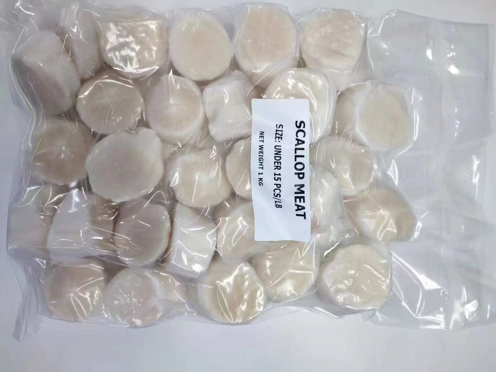

2026-06-06 · Buying checklist
Japanese Sea Scallop Meat Buying Guide 夏贻贝柱采购核对清单
Essential Japanese scallop meat specs: size grade (U15-U30), glaze percentage (typically 10-20%), net vs gross weight basis, packing (1kg/bag, 10kg/carton), and destination documentation. Always confirm glaze percentage before comparing prices — 20% glaze on gross weight means 25% higher real cost per kg of usable meat.
For Japanese sea scallop meat, a useful quotation starts with size, moisture/glaze, packing, quantity, destination terms and documents. Dingdingmiao currently handles U15, U16-20, U21-25 and U26-30 inquiry review, with reference packing of 1kg/bag and 10kg/carton. Price, payment, certificates and shipment terms should be confirmed only after buyer-specific review.

1. Confirm the Size Before Discussing Price
Scallop meat is usually discussed by count size. For this product line, the practical options are U15, U16-20, U21-25 and U26-30. The buyer should confirm whether the target is food service, retail packing, processing or wholesale distribution, because the preferred size and tolerance may change.
2. Moisture, Glaze and Net Weight Matter
Two offers can look similar but mean different things if moisture, glaze or net weight rules are not aligned. Before preparing a quote, ask for the buyer's target moisture/glaze requirement, net weight standard and whether any local label declaration is required.
3. Packing and Carton Requirements
The current packing reference is 1kg per bag and 10kg per carton. Importers should confirm carton mark, label language, production date format, shelf-life format and whether the packing needs to match retail, food service or wholesale use.
4. Documents Should Be Checked Per Order
Do not assume one certificate package fits every market. Health certificate, certificate of origin, plant documents and shipment records should be checked by product, partner plant and destination market before contract or PI.
5. What to Send in an Inquiry
- Target size: U15, U16-20, U21-25 or U26-30.
- Estimated quantity and buying frequency.
- Moisture/glaze/net weight requirements.
- Destination port or trade terms to evaluate.
- Required documents and label requirements.
- Photos or reference specs if the buyer has an existing product standard.